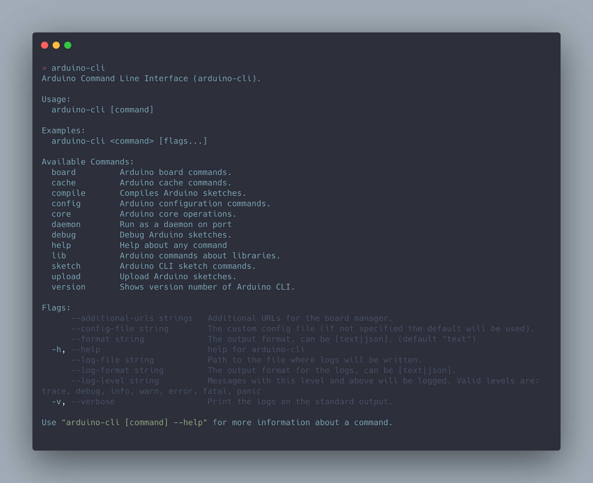
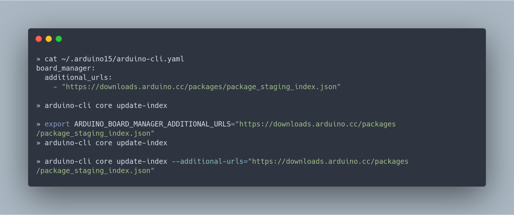
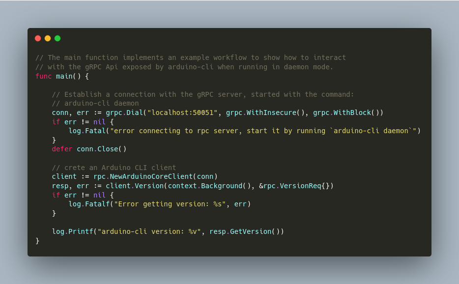
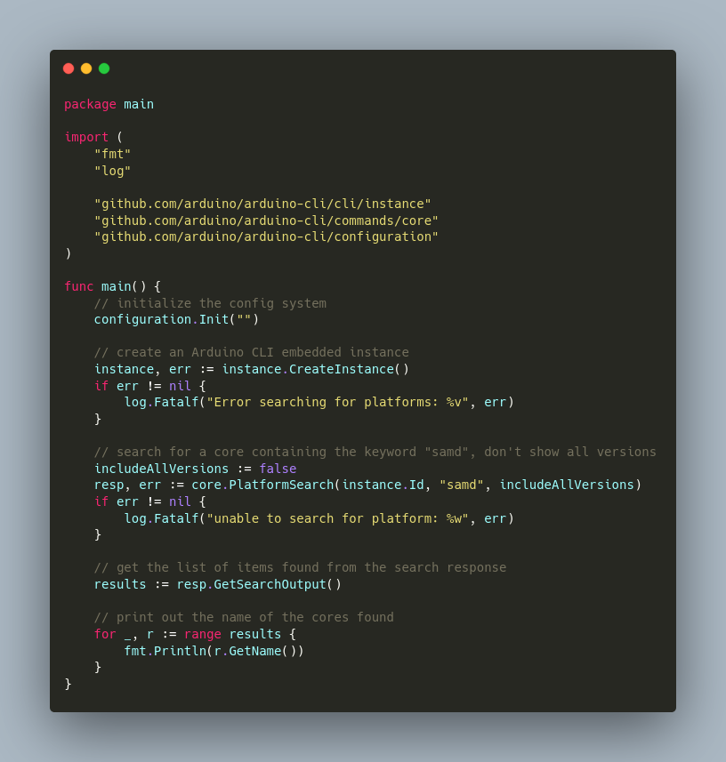

The three pillars of the Arduino CLI¶
The Arduino CLI is an open source Command Line Application written in Golang that can be used from a terminal to compile, verify and upload sketches to Arduino boards and that’s capable of managing all the software and tools needed in the process. But don’t get fooled by its name: Arduino CLI can do much more than the average console application, as shown by the Arduino Pro IDE and Arduino Create, which rely on it for similar purposes but each one in a completely different way from the other. In this article we introduce the three pillars of the Arduino CLI, explaining how we designed the software so that it can be effectively leveraged under different scenarios.
The first pillar: command line interface¶
Console applications for humans¶
As you might expect, the first way to use the Arduino CLI is from a terminal and by a human, and user experience plays a key role here. The UX is under a continuous improvement process as we want the tool to be powerful without being too complicated. We heavily rely on sub-commands to provide a rich set of different operations logically grouped together, so that users can easily explore the interface while getting very specific contextual help.

Console applications for robots¶
Humans are not the only type of customers we want to support and the Arduino CLI was also designed to be used programmatically - think about automation pipelines or a CI/CD system. There are some niceties to observe when you write software that’s supposed to be easy to run when unattended and one in particular is the ability to run without a configuration file. This is possible because every configuration option you find in the arduino-cli.yaml configuration file can be provided either through a command line flag or by setting an environment variable. To give an example, the following commands are all equivalent and will fetch the package index used to work with unstable experimental versions of Arduino's cores:

See the configuration documentation for details about Arduino CLI's configuration system.
Consistent with the previous paragraph, when it comes to providing output the Arduino CLI aims to be user friendly but also slightly verbose, something that doesn’t play well with robots. This is why we added an option to provide output that’s easy to parse. For example, the following figure shows what getting the software version in JSON format looks like.

Even if not related to software design, one last feature that’s worth mentioning is the availability of a one-line installation script that can be used to make the latest version of the Arduino CLI available on most systems with an HTTP client like curl or wget and a shell like bash.
For more information on Arduino CLI's command line interface, see the command reference.
The second pillar: gRPC interface¶
gRPC is a high performance RPC framework that can efficiently connect client and server applications. The Arduino CLI can act as a gRPC server (we call it daemon mode), exposing a set of procedures that implement the very same set of features of the command line interface and waiting for clients to connect and use them. To give an idea, the following is some Golang code capable of retrieving the version number of a remote running Arduino CLI server instance:

gRPC is language agnostic: even if the example is written in Golang, the programming language used for the client can be Python, JavaScript or any of the many supported ones, leading to a variety of possible scenarios. The new Arduino Pro IDE is a good example of how to leverage the daemon mode of the Arduino CLI with a clean separation of concerns: the Pro IDE knows nothing about how to download a core, compile a sketch or talk to an Arduino board and it demands all these features of an Arduino CLI instance. Conversely, the Arduino CLI doesn’t even know that the client that’s connected is the Pro IDE, and neither does it care.
For more information on Arduino CLI's gRPC interface, see the gRPC interface reference.
The third pillar: embedding¶
Arduino CLI is written in Golang and the code is organized in a way that makes it easy to use it as a library by including the modules you need in another Golang application at compile time. Both the first and second pillars rely on a common Golang API, a set of functions that abstract all the functionalities offered by the Arduino CLI, so that when we provide a fix or a new feature, they are automatically available to both the command line and gRPC interfaces. The source modules implementing this API can be imported in other Golang programs to embed a full-fledged Arduino CLI. For example, this is how some backend services powering Arduino Create can compile sketches and manage libraries. Just to give you a taste of what it means to embed the Arduino CLI, here is how to search for a core using the API:

Embedding the Arduino CLI is limited to Golang applications and requires a deep knowledge of its internals. For the average use case, the gRPC interface might be a better alternative. Nevertheless, this remains a valid option that we use and provide support for.
Conclusions¶
You can start playing with the Arduino CLI right away. The code is open source and the repo contains example code showing how to implement a gRPC client. If you’re curious about how we designed the low level API, have a look at the commands package and don’t hesitate to leave feedback on the issue tracker if you’ve got a use case that doesn’t fit one of the three pillars.